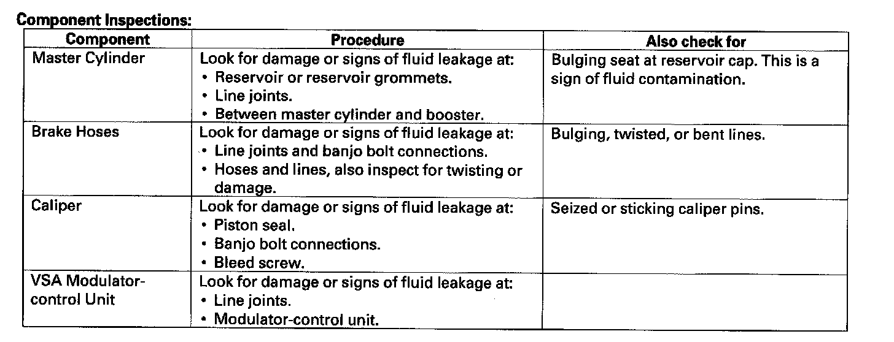

Component Tests and General Diagnostics
Brake System Inspection and TestInspect the brake system components listed. Repair or replace any parts that are leaking or damaged.

Brake System Test
Brake pedal sinks/fades when braking
1. Set the parking brake, and start the engine, then turn off the A/C switch. Allow the engine to warm up to normal operating temperature (radiator fan comes on twice).
2. Attach a 50 mm (2 in.) piece of masking tape along the bottom of the steering wheel, and draw a horizontal reference mark across it.
3. With the transmission in P or N position, press and hold the brake pedal lightly (about the same pressure needed to keep an A/T equipped vehicle from creeping), then release the parking brake.
4. While still holding the brake pedal, hook the end of the tape measure behind the brake pedal, then pull the tape up to the steering wheel. Note the measurement between the brake pedal and the reference mark on the steering wheel.
5. Apply steady pressure to the brake pedal for 3 minutes.
6. Watch the tape measure.
^ If the measurement increases 10 mm (3/8 in.) or less, the master cylinder is OK.
^ If the measurement increases more than 10 mm (3/8 in.), replace the master cylinder.